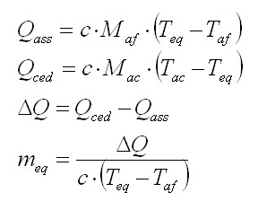

A bit of theory |
Massa Equivalente d´Acqua |
Un po´ di teoria |
|
The calorimeter is used to measure the specific heat of substances Each calorimeter, inevitably, has heat losses that they be estimated to make a correct measurement of the specific heat. This correction will be introducing the concept of equivalent mass water. The equivalent mass water is a mass of virtual water, which compensates the calorimeter heat losses. Note: Pressing the button <Calcola> you will notice that the heat released is greater than the heat absorbed. In a real calorimeter thes difference is the calorimeter losses. Imagine that this difference warms a certain amount of water that we call the equivalent water mass. |
Il calorimetro serve per misurare il calore specifico delle sostanze. Ogni calorimetro, inevitabilmente, presenta delle perdite di calore che devono essere stimate per effettuare una misura corretta del calore specifico. Tale correzione si effettua introducendo il concetto di massa equivalente d´acqua. La massa equivalente d´acqua è una massa d´acqua virtuale che compensa le perdite del calorimetro. Nota Premendo il bottone <Calcola> noterete che il Calore Ceduto è maggiore del Calore Assorbito. In un calorimetro reale tale differenza rappresenta le perdite del calorimetro. Immaginiamo che tale differenza riscaldi una certa quantità d´acqua quella che noi definiamo massa di acqua equivalente. |
|
|
Adopted formulas: c=specific heat of water Maf = cold water mass Taf = cold water mass temperature Mac = hot water mass Tac = hot water mass temperature Teq = thermal equilibrium temperature Qass = heat absorbed Qced = heat released Qdif = difference in heat meq = equivalent water mass  |
Scarica l'applet ed il relativo codice java (±11 KB) Download the applet and the Java code (±11 KB) |
Formule adottate: c = calore specifico dell´acqua Maf = massa d´acqua fredda. Taf = temperatura massa d´acqua fredda. Mac = massa d´acqua calda. Tac = temperatura massa d´acqua calda. Teq = temperatura di equilibrio termico. Qass = calore assorbito Qced = calore ceduto Qdif = differenza calore meq = massa d´acqua equivalente |
|
How to use the web calculator: Digit the cold water mass. Digit the cold water mass temperature. Digit the hot water mass. Digit the hot water mass temperature. Digit the thermal equilibrium temperature. Click on the button <Calcola> |
Come utilizzare la calcolatrice: Inserire la massa d´acqua fredda. Inserire la temperatura della massa d´acqua fredda. Inserire la massa d´acqua calda. Inserire la temperatura della massa d´acqua calda. Inserire la temperatura di equilibrio termico. Premere il bottone <Calcola> |